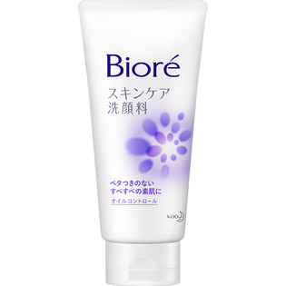

返回列表
产品名称：ビオレ スキンケア洗顔料 オイルコントロール

花王 ビオレ スキンケア洗顔料 オイルコントロール １３０Ｇ
メーカー 花王
JANコード 4901301286468
商品の特徴
ベタつきのないすべすべの素肌に
- 成分・分量
- 水、グリセリン、パルミチン酸、ステアリン酸、ラウレス-4カルボン酸、ミリスチン酸、水酸化K、PG、ラウリン酸、ソルビトール、ラウリルグルコシド、ポリクオタニウム-7、エタノール、メチルパラベン、EDTA-2Na、香料
- 用法及び用量
- ・適量（2～3cm程度）を水やお湯で泡立てて洗い、あとはよく流します。
・残り少なくなったら、キャップを回してはずすと、最後までムダなく使えます。